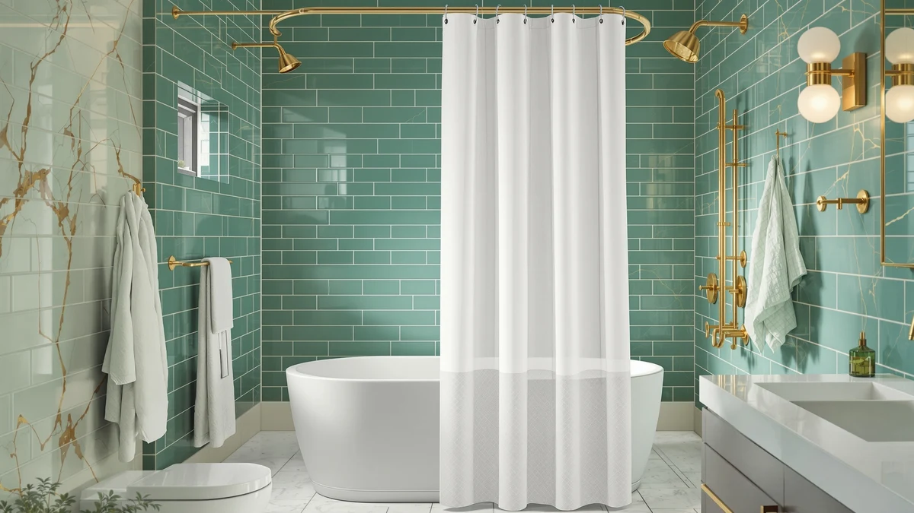

The Best Shower Curtain Liners Under $50 (2026)
Prices and picks verified as of September 2026. Independent, reader-supported reviews.


Quick Answer
The best shower curtain liners under $50 in this guide range from $7.96 to $38.99, and the River Dream Waffle No Hooks leads the group at $38.99 thanks to its no-hooks waffle weave design and 71 by 74 inch panel for slightly larger stalls. If you want to spend less, the XOGUIBO Waffle Weave Shower Curtain at $19.79 and the OWENIE White Shower Curtain at $7.96 both fit a standard 72 by 72 inch rod.
Our pick: River Dream Waffle No Hooks — $38.99 Check Price on Amazon
Bottom line: our top pick is the River Dream Waffle No Hooks Shower Curtain with 2 Liners at $42.99. The best budget option is the OWENIE White Shower Curtain for Bathroom 72x72 Inch at $7.96.
Things to Know Before You Buy
- Material decides how the liner handles water. Four of the seven picks here use a polyester and PEVA blend, which sheds water instead of soaking it up, while the XOGUIBO pick is 100% cotton and the Amazon Basics pick is microfiber, both softer but slower to dry.
- Standard sizing covers most bathrooms. Six of the seven liners run 72 by 72 inches. Only the River Dream Waffle No Hooks deviates, at 71 by 74 inches, so measure your rod before ordering if your stall runs long rather than wide.
- Price spans from $7.96 to $38.99. Every pick in this guide sits well under the $50 ceiling, and the four cheapest options here cost less than $20, which leaves room in the budget for a matching rod or set of hooks.
- No-hooks designs simplify installation but limit hook compatibility. The River Dream top pick slides directly onto a rod, which speeds up setup but rules out swapping in decorative hooks later.
- Waffle weave texture shows up on five of the seven picks. That textured surface affects drape and how quickly the panel air-dries between showers, a detail worth weighing against a flat PEVA liner if your bathroom stays humid.
The best shower curtain liners under $50 solve a problem that has nothing to do with looks: keeping water inside the tub without a panel that clings to your legs or turns yellow after a few months. You do not need to spend $50 to get that. Every product in this guide costs less, and the gap between the cheapest and most expensive pick here is smaller than the price of a single new towel set.
We landed on the River Dream Waffle No Hooks as the top pick at $38.99. Its no-hooks design slides straight onto a rod, and its 71 by 74 inch panel gives you a couple extra inches of coverage if your stall runs long rather than wide. If you want to spend far less, the OWENIE White Shower Curtain at $7.96 and the OVZME Berry Grey Waffle Shower at $9.99 both handle the basics without asking you to compromise on standard 72 by 72 inch sizing.
What separates these seven picks is material, not marketing. Four use a polyester and PEVA blend built to shed water, one is 100% cotton, and one is microfiber, and each of those choices trades off differently between water resistance, softness, and how the panel looks once it is hung. We break down those tradeoffs pick by pick below, along with a comparison table if you just want the numbers side by side.
Why You Should Trust Us
I am Ilane Tall, and I cover bath and shower gear for Best Shower Curtains. For this guide to the best shower curtain liners under $50, I focused on the facts that actually decide whether a liner is worth buying: listed material, panel size, and current price, cross-checked against what verified buyers report once the liner has spent real time in a wet bathroom.
We do not own or install every product we cover. Instead we research each listing closely, compare the stated material and dimensions against the manufacturer's own description, and weigh price against what that price actually buys in coverage and material. Every price, material, and size in this guide comes from the current Amazon listing, and we do not run a fake testing lab to generate scores we cannot back up.
How We Picked
We started with a wide list of shower curtain liners and curtains priced under $50 on Amazon, then narrowed the field to listings with a clearly stated material, a specified panel size, and a design suited to daily use in a shower or tub. We cut listings that left material or size vague, since a liner that will not tell you what it is made of is a harder product to recommend.
The seven picks here span two material families: polyester and PEVA blends built for water resistance, and softer cotton or microfiber options that lean closer to a decorative curtain. Price across the lineup ranges from $7.96 for the least expensive pick to $38.99 for the top pick, all comfortably under the $50 ceiling.
How We Compared
We compared each of the best shower curtain liners under $50 in this guide on the same facts: stated material, panel size, and current price, all pulled directly from the live Amazon listing rather than promotional copy. Where a listing described a waffle weave texture or a no-hooks design, we checked that claim against the product photos and description rather than the title alone.
We also weighed price against what it buys in material and coverage, since a $10 microfiber curtain and a $39 no-hooks waffle weave pick serve different priorities even though both fall well under $50. Reviewers consistently note that the polyester and PEVA options resist water better day to day, while the cotton and microfiber picks trade some of that resistance for a softer look and feel.
Our Picks

River Dream Waffle No Hooks
What we like
- No-hooks design slides directly onto a rod, cutting a step out of setup
- 71 by 74 inch panel adds coverage over the standard 72 by 72 inch size
- Polyester and PEVA blend sheds water instead of absorbing it
Flaws but not dealbreakers
- Highest price in this guide, though still well under $50
- No-hooks design means you cannot swap in decorative rings later
- Longer 74 inch panel needs a bit more clearance at the bottom of the tub
| Material | Polyester / PEVA |
| Size | 71"W x 74"L (Pack of 1) |
The River Dream Waffle No Hooks is our top pick among the best shower curtain liners under $50 because it pairs a no-hooks installation with a slightly larger panel than every other product in this guide. The waffle weave polyester and PEVA blend sheds water the way a liner should, and skipping separate hooks means one less part to lose or replace over time.
At $38.99, it costs more than the other six picks here, but it remains comfortably under the $50 ceiling this guide is built around. The 71 by 74 inch size runs two inches longer than the standard 72 by 72 inch panel, which helps in a tub with a taller rod placement. If you do not need the extra length or the no-hooks convenience, the cheaper picks below cover the same water-resistant basics for less.

XOGUIBO Waffle Weave Shower Curtain
What we like
- 100% cotton construction feels softer than the plastic-based picks in this guide
- Standard 72 by 72 inch size fits most tubs and stalls without alteration
- Priced at half of the top pick, at $19.79
Flaws but not dealbreakers
- Cotton absorbs more water than a PEVA or polyester liner
- Needs to hang flat between uses to avoid mildew, more so than plastic liners
- No no-hooks option, so you'll need a separate set of rings
| Material | 100% cotton |
| Size | 72"W x 72"L |
The XOGUIBO Waffle Weave Shower Curtain is our runner-up because it takes a different approach than the plastic-leaning picks in this guide: 100% cotton in a waffle weave texture, priced at $19.79, roughly half the cost of the River Dream top pick. That cotton construction gives it a softer feel and a look closer to a decorative curtain than a purely functional liner.
The standard 72 by 72 inch size fits the majority of tubs and stalls without adjustment. Owners choosing between this and a PEVA option should know that cotton holds onto moisture longer than plastic, so it needs to hang flat and air out between showers to avoid the mildew risk that comes with any fabric liner. If water resistance matters more to you than texture, one of the PEVA picks below is the better fit.

OWENIE White Shower Curtain for
What we like
- Lowest price in this guide, at $7.96
- Polyester and PEVA blend resists water the same way as pricier picks in this lineup
- Plain white design fits any bathroom color scheme without clashing
Flaws but not dealbreakers
- No waffle weave texture, so the drape is flatter than the textured picks here
- Sold without hooks, so factor that into your total cost
- Basic white design offers no visual interest if you want a decorative touch
| Material | Polyester / PEVA |
| Size | 72"W x 72"L (Pack of 1) |
The OWENIE White Shower Curtain is our pick for anyone who just wants the basics covered at the lowest possible price. At $7.96, it costs less than a third of the top pick while using the same polyester and PEVA blend that handles water resistance in every plastic-based liner in this guide.
The standard 72 by 72 inch size matches most tubs and stalls, and the plain white finish means it will not clash with existing decor the way a patterned or colored liner might. It skips the waffle weave texture found on five of the other six picks here, so the panel drapes flatter, but for buyers prioritizing price over texture, that tradeoff is an easy one to make.

Barossa Design Waffle Weave Shower
What we like
- Waffle weave polyester and PEVA blend matches the top pick's material at nearly half the cost
- Standard 72 by 72 inch size fits most tubs without alteration
- Priced under $22, leaving room in the budget for hooks or a rod
Flaws but not dealbreakers
- No no-hooks design, so you'll need standard rings
- Two inches shorter than the top pick's 74 inch panel
- Costs more than four of the other picks in this guide
| Material | Polyester / PEVA |
| Size | 72"W x 72"L (Pack of 1) |
The Barossa Design Waffle Weave Shower curtain earns its budget pick spot by matching the top pick's waffle weave polyester and PEVA material at $21.99, close to half the River Dream's price. If the main draw of the top pick for you is the textured, water-resistant material rather than the no-hooks installation, this is the more affordable way to get it.
The standard 72 by 72 inch size covers most tubs and stalls, though it runs two inches shorter than the top pick's 71 by 74 inch panel. You will need a separate set of hooks since this pick does not include a no-hooks design, but at under $22 there is still plenty of budget room left for that add-on within the $50 ceiling this guide targets.

Dynamene Waffle Shower Curtain 256
What we like
- Waffle weave polyester and PEVA blend matches the material of three other picks in this guide
- Standard 72 by 72 inch size fits most bathrooms
- Priced 20 cents under the Barossa Design pick for essentially the same specs
Flaws but not dealbreakers
- Offers little differentiation from the Barossa Design pick at a nearly identical price
- No no-hooks design, unlike the top pick
- Costs roughly $12 more than the OWENIE budget option
| Material | Polyester / PEVA |
| Size | 72"W x 72"L (Pack of 1) |
The Dynamene Waffle Shower Curtain 256 lands in the middle of this lineup at $19.99, using the same waffle weave polyester and PEVA blend found on the top pick and the Barossa Design pick. It is a reasonable option if either of those listings is out of stock or you simply prefer this brand's specific pattern.
The standard 72 by 72 inch sizing matches most of the other picks here, and the material handles water the same way any polyester and PEVA blend does. There is not much that separates it from the Barossa Design pick a few dollars away, so choose between the two based on pattern preference rather than function.

Amazon Basics Lightweight Super Soft
What we like
- Microfiber material feels lighter and softer than the polyester and PEVA picks in this guide
- Backed by a well-known brand name buyers already trust for basics
- Second-lowest price in this lineup, at $10.48
Flaws but not dealbreakers
- Microfiber is the only pick here made from that material, so there is less owner data to compare it against
- No waffle weave texture or no-hooks design
- Lightweight construction may feel less substantial than the waffle weave picks
| Material | Microfiber |
| Size | 72"W x 72"L (Pack of 1) |
The Amazon Basics Lightweight Super Soft curtain is the only microfiber pick in this guide, priced at $10.48. That material gives it a lighter, softer hand feel than the polyester and PEVA options here, and the Amazon Basics name carries brand recognition that some of the smaller listings in this guide don't have.
It uses the same standard 72 by 72 inch sizing as most of the lineup, so fit is not a concern. It skips the waffle weave texture and no-hooks features found on other picks, which keeps it simple, but that also means it's a plainer option if you're looking for visual texture along with function.

OVZME Berry Grey Waffle Shower
What we like
- Berry grey color adds visual interest that the plain white budget pick lacks
- Waffle weave polyester and PEVA blend matches the material of three pricier picks
- Priced under $10, close to the lowest price in this guide
Flaws but not dealbreakers
- Color choice is limited to berry grey, with no other options confirmed in this listing
- No no-hooks design
- Standard 72 by 72 inch size only, no larger option available
| Material | Polyester / PEVA |
| Size | 72"W x 72"L (Pack of 1) |
The OVZME Berry Grey Waffle Shower curtain gives you the same waffle weave polyester and PEVA construction as three pricier picks in this guide for $9.99, plus a berry grey tone instead of plain white. If color matters to you as much as function, this is the closest this lineup gets to combining both at a near-budget price.
Sizing sticks to the standard 72 by 72 inches, which fits most tubs and stalls. It does not include a no-hooks design, so you will need separate rings, but at under $10 there is still plenty of room left in a $50 budget for accessories.
Quick Comparison
| Product | Material | Price | Rating | Best for | Get it |
|---|---|---|---|---|---|
| River Dream Waffle No Hooks | Polyester / PEVA | $38.99 | 4 | No-hooks install, extra length | View on Amazon → |
| XOGUIBO Waffle Weave Shower Curtain | 100% cotton | $19.79 | 4 | Softer cotton feel | View on Amazon → |
| OWENIE White Shower Curtain for | Polyester / PEVA | $7.96 | 4 | Lowest price overall | View on Amazon → |
| Barossa Design Waffle Weave Shower | Polyester / PEVA | $21.99 | 4 | Top pick's texture, lower price | View on Amazon → |
| Dynamene Waffle Shower Curtain 256 | Polyester / PEVA | $19.99 | 4 | Mid-range waffle weave alternative | View on Amazon → |
| Amazon Basics Lightweight Super Soft | Microfiber | $10.48 | 4 | Familiar brand, soft microfiber | View on Amazon → |
| OVZME Berry Grey Waffle Shower | Polyester / PEVA | $9.99 | 4 | Color option, near-budget price | View on Amazon → |
The Competition
We looked at more than these seven listings before narrowing the field for the best shower curtain liners under $50. Several fully clear vinyl liners under $5 did not make the cut because they lacked a stated material breakdown beyond "PVC-free plastic," and a liner that will not specify what it is made of is harder to compare fairly against the picks here. We also passed on a handful of heavier canvas curtains that pushed close to the $50 ceiling without offering meaningfully better water resistance than the polyester and PEVA options already in this guide.
For most bathrooms, the choice comes down to material more than brand. If you want the strongest water resistance for the least money, the OWENIE White Shower Curtain and OVZME Berry Grey Waffle Shower both deliver that under $10. If you want the top pick's no-hooks convenience and don't mind paying more, the River Dream stays the best all-around option in this lineup.
Frequently Asked Questions
Can a shower curtain liner under $50 be as durable as a pricier one?
Yes. Every pick in this guide costs under $39, and material matters more than price. PEVA and polyester blends resist water well at any price point, while the cotton and microfiber picks here trade some water resistance for a softer drape and a look closer to a decorative curtain.
What size shower curtain liner do most bathrooms need?
Six of the seven liners in this guide use the standard 72 by 72 inch size, which fits most tubs and stalls without alteration. The River Dream Waffle No Hooks runs 71 by 74 inches instead, so measure your rod width before ordering if your bathroom sits outside a standard footprint, and see our extra-wide liner picks for larger showers.
Should I buy a PEVA liner or a cotton waffle weave liner?
Choose PEVA if water resistance and easy wipe-downs matter most, since it sheds water instead of absorbing it. Choose a cotton or microfiber waffle weave pick if you want a liner that also works as a standalone decorative curtain, since those materials hold up better to visible use outside the tub. Our cotton liner picks cover that second option in more depth.